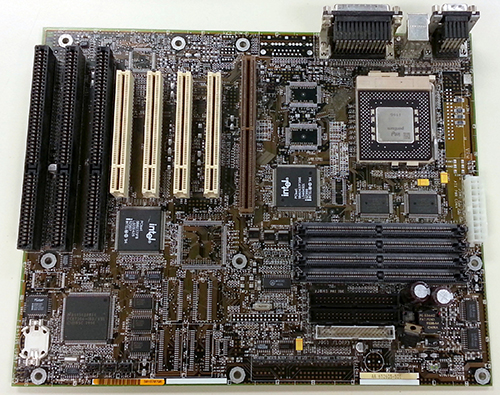

Virtual Computer Tour
Stop #1: The Motherboard
When you look inside a computer, the biggest part you will see is the motherboard. The motherboard acts like the spine of the computer. Everything inside (and outside) the computer must be connected to the motherboard somehow. The motherboard provides circuits that carry data from one part of the computer to another, just like your spine carries signals across nerves to different parts of your body.

The motherboard shown above is designed to fit inside a desktop computer. While some components, like the sound card and the video card, are attached directly to the computer, a desktop motherboard typically includes extra slots to allow you to easily install new hardware at a later date, to add additional capabilities to the computer. For example, you may want to install a better video card later for a new game that has better graphics. Or you may want to add a wireless network adapter so that you don't have to worry about plugging the computer into a network.
All computers have a motherboard, but the motherboard will look different depending on the type of computer you are using. The picture shown above is a motherboard from a desktop computer, but that obviously would not fit in a smart phone! The smaller the device is, the smaller the motherboard is, but the trade off is that when you have a very small motherboard, you don't have any way of changing the parts to upgrade things like memory or video.
Ready for the next part of your tour?? If so, click the button below!